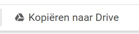
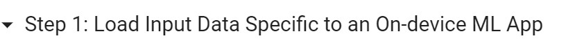
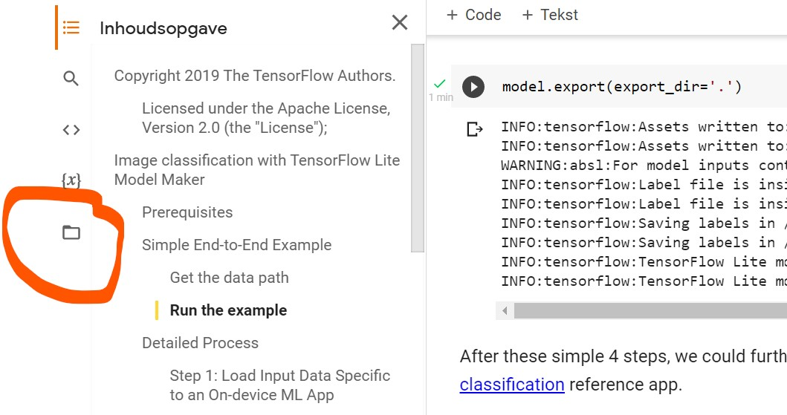
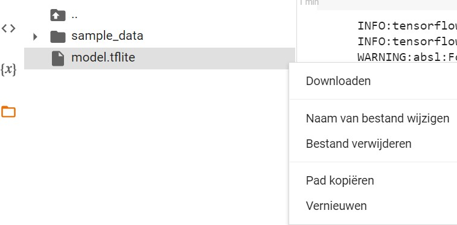
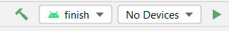
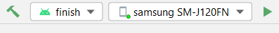
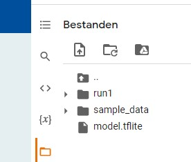
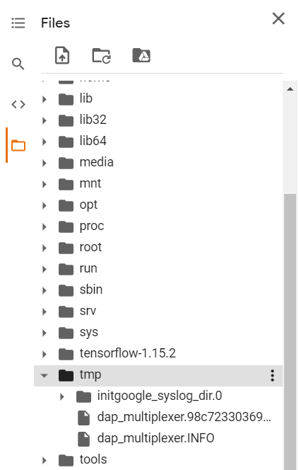
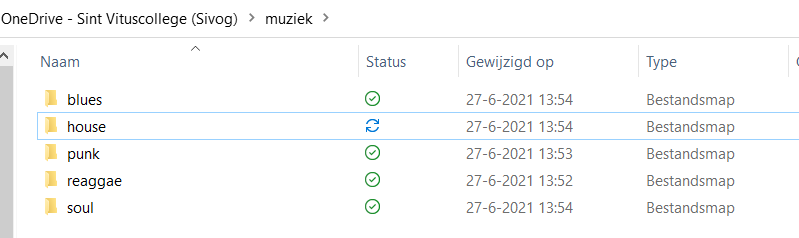

Dit hoofdstuk is een praktische opdracht waarin je in ongeveer 9 lessen een Android app gaat bouwen waarmee je als gebruiker van de app bepaalde beelden (van bijv. bloemen) die men via de camera ziet, kunt categoriseren (en dus bepaalde bloemen kunt herkennen). Je doorloopt het hele proces van het ontwikkelen van een dergelijke app. We hopen dat je daar veel plezier aan beleeft.
Voor de herkenning van beelden gebruiken we de AI tools van Google: Google Colab (https://colab.research.google.com/). De app bouw je met Android Studio (https://developer.android.com/studio).
Voorwaarden om deze opdracht uit te kunnen voeren zijn:
- Een Google account met Google Drive
- Een Android telefoon
- De mogelijkheid om Android studio op een computer te installeren.
De opdracht is in verschillende fasen opgebouwd:
- Maak een eerste app: In deze fase train je een netwerk, exporteer je de agent van dit netwerk en bouw je een app op deze agent.
- Optimaliseren neurale netwerk: Je herhaalt bovenstaande stap, maar je gaat proberen de app beter te laten voorspellen door andere keuzes te maken in de vorm van het netwerk en/of de manier van trainen.
- Andere dataset gebruiken: Naast het leren herkennen van bloemen kan hetzelfde netwerk voor andere afbeeldingen worden gebruikt.
- Eigen dataset gebruiken: Heb je tijd teveel dan kun je ook nog een eigen verzameling van afbeeldingen gaan aanleggen om het netwerk te trainen.
Docentenhandleiding
Inleiding
Deze praktische opdracht is bedoeld om de leerlingen het totale productie proces te laten doorlopen om een App voor een mobieltje te maken waarmee je bepaalde beelden (van bijv. bloemen) die je via de camera ziet, kunt categoriseren en dus bepaalde bloemen kunt herkennen. Verder is het uiteraard ook de bedoeling dat zij daar plezier aan beleven. Er zijn 4 fasen in deze opdracht. In Fase 1 wordt een standaard voorbeeld doorlopen. In Fase 2 wordt geprobeerd dit standaard voorbeeld te optimaliseren. In Fase 3 kan het proces worden oever gedaan met andere afbeeldingen die al voor de leerlingen zijn verzameld. In Fase 4 ten slotte zouden de leerlingen eerst zelf afbeeldingen kunnen verzamelen en dan met deze afbeeldingen een app te bouwen. Deze laatste Fase is erg arbeidsintensief omdat er een flinke verzameling afbeeldingen moet worden verzameld.
Minimaal is dus Fase 1 nodig. Voor iets meer begrip is Fase 2 een nuttige uitbreiding. Fase 3 en 4 zijn niet echt nodig, maar kunnen voor meer eigenaarschap zorgen.
De opdracht neemt 3 - 9 lesuren in beslag al naar gelang de diepgang. Fase 1: 3 lesuren. Fase 2: 2 lesuren. Fase 3: 1 lesuur. Fase 4 : →
Benodigdheden
- Er wordt gebuikt gemaakt van Google Colab (https://colab.research.google.com/). Om van Google Colab gebruikt te maken moeten de leerlingen een Google Account hebben en zich aangemeld hebben voor Google Drive.
De reden dat er gebruik gemaakt wordt van Google Colab is dat een gemiddelde laptop niet de capaciteit heeft om tijdig voldoende foto's te verwerken en daarmee een neuraal netwerk te trainen waarmee beelden herkend kunnen worden.
- De App wordt gemaakt met Android Studio (https://developer.android.com/studio). Deze omgeving moet dus door tenminste enige leerlingen te installeren zijn.
- De App runt op een Android telefoon. Er moeten dus enige leerlingen de beschikking hebben over een Android telefoon.
- Tenslotte is er een UBS - mini USB kabeltje nodig om de App vanaf de computer op de telefoon te installeren.
NB:
- Indien het niet mogelijk is Android Studio te gebruiken of gebruik te maken van Android telefoons door de leerlingen zou je je kunnen beperken tot het laten inleveren van de Tensorflow bestanden en het vervolgens zelf testen van de resultaten.
- Indien het downloaden van bestanden bij Fase2 en Fase4 op de systemen van de leerlingen te veel tijd kost, kun je ook zelf een aantal bestanden om te testen selecteren.
Beoordeling
Je zou cijfers kunnen geven door de groepen volgens de resultaten van de Test bij Fase2 en Fase4 te ranken en vervolgens de ranking over een cijferschaal te verdelen.
Bij de opdrachten Fase2 en Fase4 zou je de opdracht als volgt specifieker kunnen formuleren:
Iedere leerling moet minstens 1 parameter adopteren en uitzoeken hoe deze werkt. Vervolgens moet de groep naast het Tensorflow model een document inleveren waarin staat hoe de parameters zijn ingesteld en en waarom. Er moet in dit document duidelijk zijn welke leerling voor welke parameters verantwoordelijk is.
Laat de leerlingen vervolgens dit document presenteren zodat je met gerichte vragen na kunt gaan of de leerlingen ook daadwerkelijk weten waar de zaken over gaan.
Leerlingen krijgen dan alleen het groepscijfer als blijkt dat zij ook daadwerkelijk een bijdrage hebben geleverd.
Fase 1:Maak een eerste app
We gaan een eerste App voor een Android telefoon maken waarmee je bepaalde bloemen kunt herkennen met je camera zoals je hiernaast ziet: Je richt je camera op een bloem en de app reageert door onder in het scherm te vertellen wat de meest passende bloemsoort is.
- Maak een neuraal netwerk dat bepaalde bloemen herkent
- Maak een agent (= app) die dit neurale netwerk gebruikt
- Zet de App op een Android telefoon
- Test de App
Maak een neuraal netwerk dat bepaalde bloemen herkent
- Maak eerst een Google Account aan als je dit nog niet hebt en meld je aan voor Google Drive (https://drive.google.com/)
- Volg deze link naar de Google Colab tutorial voor het classificeren van beelden, die is aangepast door Daniël Haitink zodat het netwerk kan worden getoond.
- Of download model_maker_image_classification.ipynb, ga naar tensorflow.org en open vandaar uit het ipynb document.
- Of volg deze link naar de Google Colab tutorial voor het classificeren van beelden.
- Klik op: Run in Google Colab
- Er komt een tabblad in je browser bij "Model Maker Image Classification". Zorg dat dat tabblad geopend is.
Je bent nu in een notebook. In een notebook heb je bepaalde gedeeltes die je cellen noemt. In deze cellen staat code in de taal python die je op de je op de server kunt laten uitvoeren. Bij de cellen met code die je kunt laten uitvoeren staat links boven []. Als je hier boven gaat staan krijg je een pijltje en als je op het pijltje klikt wordt de code in de cel uitgevoerd. Meestal moet je alle cellen van een notebook van boven naar beneden uitvoeren om een totaal programma uit te voeren.
-
Het huidige notebook kun je niet opslaan. Zorg eerst dat je met de knop een eigen kopie maakt en ga naar het nieuwe tabblad
 - Voer de eerste cel die met !pip begint uit. Hiermee installeer je de tensorflow lite library waarin door Google ontwikkelde AI gereedschappen aanwezig zijn.
- Voer de tweede cel die met import os begint uit. Hiermee haal je onder andere een aantal onderdelen uit de tensor bibliotheken op, die later gebruikt worden. Vooral de regel "from tflite_model_maker import image_classifier" is belangrijk voor dit project. image_clasifier is een voorgebakken AI module om beelden te kunnen classificeren.
-
Zorg dat je het driehoekje bij "Simple End-to_End Example" naar beneden laat wijzen zodat "Get the data path" zichtbaar wordt.

Voer de derde cel die met image_path begint uit. Hiermee geef je aan op basis van welke gegevens het neurale netwerk getraind moet worden. Scroll in het notebook even naar beneden naar Step1 (flower_photos) om te zien wat de structuur is van de gegevens.
Je hebt dus een aantal mappen met de naam van een bloem en in elke map een aantal plaatjes van deze bloem. Er zijn per bloem best veel plaatjes, wel zo'n 5000 per bloem. Scroll weer naar boven zodat je de derde cel weer ziet.
- Ga terug naar "Run the example" en voer de cel onder "Step 1" die met data begint uit. Hier geef je aan dat de gegevens in twee groepen moeten worden gesplitst. Een groep met de naam train_data om te trainen en een groep met de naam test_data om te testen. 90% van de gegevens wordt voor testen gebruikte en 10% voor trainen.
- Voer de cel onder "Step 2. Customize the TensorFlow model" uit die met model begint uit. In deze stap wordt het model gemaakt en tegelijkertijd getraind, dit duurt een tijdje. Na afloop zie je hoeveel parameters het neurale netwerk heeft en hoeveel daarvan te trainen waren. Hoeveel zijn dit er?
-
Hoe ziet het netwerk er dan uit?
Als er geen cel is die de volgende code bevat:tf.keras.utils.plot_model(model.model,to_file='pic.png',show_shapes=True)
Druk dan op "+ Code" en voer in de nieuwe cel de bovenstaande code in en voer de cel uit. Je krijgt dan een plaatje met de verschillende lagen te zien. - Voer de cel onder "Step 3. Evaluate the model" die met loss begint uit. In deze stap wordt gekeken hoe accuraat het model is.
Nu heb je een neuraal netwerk getraind en wordt het tijd een agent (ofwel een app) rond dit netwerk te bouwen.
- Voer de cel onder "Step 4. Export to TensorFlow Lite model" uit cel die met model.export begint. Hiermee exporteer je het model, dat we straks in onze app kunnen inlezen. Dit duurt weer een tijdje.
- Je ziet onderstaand scherm (zonder rode omcirkeling) met aan de linkerkant van de uitgevoerde cel een aantal knopjes. Klik op het rood omcirkelde mapje.
Je krijgt dan links het volgende te zien als je met je rechter muis knop op model.tflite klikt.
- Selecteer vervolgens Downloaden. Het model model.tflite staat daarna in de Download map van je PC of laptop.
Maak een agent (= app) die dit neurale netwerk gebruikt
- Installeer zo nodig Android Studio (https://developer.android.com/studio)
- Download TFLClassify.zip en pak dit uit.
- Kopieer model.tflite uit je Downloads map naar de map TFLClassify en verander van de kopie de naam in FlowerModel.tflite.
- Start Android Studio.
- Selecteer Open.
- Ga naar de map TFLClassify en selecteer deze.
- Laat alle Updates uitvoeren (Duurt een tijdje)
- Selecteer finish links boven in het linker venster.
- Selecteer met je rechter muisknop New > Other > TensorFlow Lite Model.
- Selecteer het mapje aan de rechterkant van Model location en ga naar de map TFLClassify.
- Selecteer FlowerModel.tflite en daarna OK en Finish.
Als het goed gegaan is zie je een tab voor dit bestand met de volgende informatie:

- Zorg dat er naast het hamertje aan de bovenkant finish geselecteerd is. Dit ziet er zo uit:

- Druk op het hamertje om de App te maken. Onderin het scherm zie je "Gradle build running". Je kunt op Event log rechts onder klikken als je wilt zien wat er tijdens het maken gebeurt. Duurt een paar minuten.
Zet de App op een Android telefoon
- Zet op je Android telefoon de Developer options en USB debugging aan volgens deze instructie: https://developer.android.com/studio/debug/dev-options.html#enable
- (Let op: Je moet eerst de de Developer options en USB debugging op je Android telefoon aanzetten en daarna pas de Android telefoon verbinden met he USB - mini USB kabeltje)
- Verbind je Android telefoon met het USB - USB mini kabeltje met je PC of laptop.
- Als dit goed gaat zie je het device verschijnen. Dit ziet er ongeveer zo uit:

- Druk op het pijltje rechts om de App op je Android telefoon te installen. Geef op je Android telefoon toestemming.
Daarna moet je een tijd wachten. Tenslotte zie je op je Android telefoon een App als de volgende:
Test de App
Je kunt de App testen door plaatjes van bijv. zonnebloemen op het internet te zoeken en kijken of deze als zonnebloemen herkend worden als je met de camera van je Android telefoon naar het plaatje kijkt. Doe dit ook voor wat andere bloemen waarvoor het neurale netwerk getraind is.
Fase 2:Optimaliseren neurale netwerk
In Fase1 hebben we een neuraal netwerk gemaakt om bloemen te herkennen. In deze Fase bestudeer je hoe je een dergelijk neuraal netwerk kunt optimaliseren zodat het zo goed mogelijk werkt.
Competitie
We gaan werken in groepjes van drie leerlingen. Maak daarom eerst groepjes en ga daarna verder. Aan het eind van Fase2 doen we een competitie met de in Fase 1 gemaakte verschillende apps en die op de verschillende telefoons staan. Als alle apps met slechts één export zijn gebouwd is iedere app gelijk en is de competitie zinloos. Heeft ieder groepje zelf het netwerk getraind dan gaan we in de competitie als volgt te werk.
- Download op één computer de foto's waarmee de netwerken zijn getraind: https://storage.googleapis.com/download.tensorflow.org/example_images/flower_photos.tgz
- Pak dit bestand uit zodat we mappen met foto's van bloemen krijgen.
- Elk groepje mag uit elke map een zelfde aantal foto's kiezen. De gekozen foto's worden in een testmap gezet. Open de fotobestanden op de computer en scan met de apps op de mobiele telefoons de foto's.
- Alternatief: Elke groep zoekt een plaatjes op het internet van daisies (madeliefjes), dandelions (paardebloemen), roses (rozen), sunflowers (zonnebloemen) en tulips (tulpen) en plaats die in een testmap
Elk groepje test de App met alle foto's uit de test map of alle op het internet gekozen afbeeldingen en telt de percentages op waarmee de App de bloemen goed herkent. Als de App een bloem fout herkent is het percentage 0. De groep met de hoogste score wint.
Hoe kun je een neural netwerk optimaliseren
Je kunt het neurale netwerk optimaliseren door een ander pad in het notebook van de vorige keer te kiezen.
- Ga weer met deze link naar de Google Colab tutorial voor het classificeren van beelden.
- Klik weer op Run in Google Colab en ga naar het nieuw geopende tabblad.
- Voer all cellen in de sectie Prerequisites uit (2 cellen) om de juiste libraries te importeren.
- Ga nu naar de sectie "Detailed Process" en voer de cellen uit in Step 1: Load Input Data Specific to an On-device ML App
In Step 2: Customize the TensorFlow Model wordt eerst met het zelfde model als je hebt gebruikt in Fase 1 getraind met training data en validatie data. In Step 3: Evaluate the Customized Model wordt vervolgens gekeken hoe goed de test data wordt geclassificeerd. We gaan nu eerst een aantal keer trainen met hetzelfde model en slaan het resultaat op in verschillende mappen, zodat je straks de beste kan gebruiken in je app.
- Maak eerst een aantal nieuwe mappen aan waar je straks het model naar kunt exporteren. Een nieuwe map maak je door in het bestanden gedeelte met je rechter muisknop te klikken en vervolgens op "nieuwe map te klikken". In de figuur hieronder is de map run1 aangemaakt.

- Voer "Step 2" en "Step 3" uit. Noteer de resultaten loss en accuracy van zowel de laatste training stap van de uitvoer van de eerste cel in "Step 2" en van de uitvoer van de eerste cel in "Step 3" Hoe kleiner de loss en hoe hoger de accuracy hoe beter het resultaat. Na iedere herhaling exporteer je het model naar een nieuwe map door de eerste cel in "Step 4" aan te passen. (b.v. naar model.export(export_dir='./run1') als je de map run1 hebt aangemaakt) Herhaal de stappen "Step 2" , "Step 3" en "Step 4" een aantal keer (b.v 3 keer).
- Zijn er veel verschillen?
In de sectie "Change the model" zijn er een aantal suggesties ter verbetering.
- Probeer een aantal van deze suggesties uit en exporteer de modellen weer naar nieuwe mappen. Gebruik wel steeds de zelfde training , validatie en test data. Vergeet niet iedere keer te exporteren.
- B.v. in de sectie "Change to the model that's supported in this library" kun je eens kijken wat het effect op loss en accuracy is van de modellen:
'efficientnet_lite0', 'efficientnet_lite1', 'efficientnet_lite2', 'efficientnet_lite3', 'efficientnet_lite4', 'mobilenet_v2', 'resnet_50'. Hoeveel parameters zitten in jouw gebruikte modellen? - En in de sectie "Change to the model in TensorFlow Hub" kun je ook nog een geheel ander model inladen namelijk Inception V3. Voer de stappen uit en kijk of het model beter voorspeld. Hoeveel parameters zitten in dit model?
- Als laatste, behalve het herhalen van de training kun je ook proberen het model te verbeteren. Je ziet dat er nu 5 trainingsronden worden uitgevoerd. Je kunt deze verhogen door de epochs waarde in te stellen (b.v. epochs=7).
- Maak een app met het model met de beste loss en accuracy.
Haalt de nieuwe app een hogere score met de afbeeldingen uit de competitie?
Fase 3:Andere dataset gebruiken
In de vorige twee fasen hebben we het bloemen voorbeeld van het voorbeeld in Image classification with Tensorflow gebruikt. In deze fase gaan we hetzelfde model gebruiken op een andere dataset. Een dataset met verschillende beroepen.
- Dataset downloaden
- Dataset uploaden
- Dataset uitpakken
- De stappen uit Fase 1 herhalen
- Testen nieuwe app
Dataset downloaden


- Deze plaatjes zitten in het gecomprimeerde bestand train.tar.gz. Download dit bestand. train.tar.gz
- Pak train.tar.gz uit (Met Windows 10 lukt het niet om een tar dan wel gz bestand uit te pakken. Gebruik 7-Zip). Je krijgt dan een bestand train.tar.
- Pak train.tar uit. Je krijgt dan een map train.
In de map train vind je een aantal mappen met namen van beroepen. In deze mappen met namen van beroepen vind je plaatjes (224x224 pixels) van deze beroepen.
Dataset uploaden
We gaan de dataset train.tar.gz gebruiken om een model te trainen die de beroepen moet gaan herkennen. Dit doen we weer met Image classification with Tensorflow.
- Open het tensorflow notebook
- Klik op: Run in Google Colab en ga weer naar de nieuw geopende tab.
- Klik op het mapje icon aan de linker kant en het pijtje naar boven. Je ziet nu welke mappen er op de server voor jou beschikbaar zijn. Open .. , zoek vervolgens naar de /tmp map en ga hier op staan.

- Klik de rechter muis knop en selecteer Upload. Upload vervolgens van je laptop of PC het bestand train.tar.gz. Je kunt nu gerust even pauze nemen want dit duur mogelijk een tijdje.
Je ziet nu het bestand train.tar.gz in de /tmp map verschijnen.
- Maak vervolgens in de map /tmp een map train aan om de data van de dataset in te zetten door op de rechter muis knop te klikken en New Folder te selecteren.
Als alles correct gegaan is zie je het volgende:
Dataset uitpakken
- Ga nu in het notebook staan in de eerste cel in de sectie "Prerequisites" die begint met: !pip en selecteer in het menu bovenaan: "+ Code".
Je krijgt nu een nieuwe cel.
- Zet in de nieuwe cel de volgende commando's
bash !tar xvf /tmp/train.tar.gz -C /tmp/train !rm /tmp/train/*/Thumbs.db
Het eerste commando pakt de dataset uit in de map /tmp/train.
Het tweede commando zorgt ervoor dat bepaalde ongewenste bestanden verwijderd worden.
- Voer de code cel vervolgens uit door op het pijltje te gaan staan en de linker muis knop te klikken. Je ziet nu dat de dataset wordt uitgepakt in de map /tmp/train.
Stappen uit Fase 1 herhalen
- Voer alle andere cellen in de sectie "Prerequisites" uit.
- Scroll naar beneden naar de code cel in de sectie "Get the data path" die begint met: image_path en pas deze code cel aan zodat deze er als volgt uitziet:
python image_path = tf.keras.utils.get_file('/tmp/train','/tmp/train') image_path = os.path.join(os.path.dirname(image_path),'train') - Voer vervolgens deze cel uit.
- Voer nu weer net als in Fase 1 de cellen uit in de sectie "Run the example".
De cel model.export(export_dir='.') heeft het model model.tflite geplaatst in de map /content.
Maken App met het nieuwe model
Nu we weer een getraind model hebben kunnen we deze op dezelfde manier in een app verwerken zoals in Fase 1 is uitgelegd.
- Download model.tflite en hernoem die naar beroepen.tflite en bouw hiermee een nieuwe app.
Testen nieuwe app
Je kunt je App testen door de plaatjes van de dataset train.tar.gz die je op je laptop of PC gedownload hebt op het scherm te openen en je telefoon erbij te houden om te testen hoe goed de App plaatjes van bepaalde beroepen herkent. Je kunt natuurlijk ook op het internet naar plaatjes zoeken die bij deze beroepen horen en kijken of die worden herkend.
Fase 4:Eigen dataset gebruiken
Nog leuker kan het worden als jullie een eigen dataset gebruiken. In Fase 3 heb je gezien dat er heel veel afbeeldingen per categorie aanwezig zijn. Het zal een hele klus worden om een behoorlijk aantal afbeeldingen bij elkaar te verzamelen en deze ook nog naar een juiste formaat te transformeren. Dat doe je natuurlijk niet alleen.
- Thema en klassen verzinnen
- Afbeeldingen verzamelen
- Dataset inpakken
- De stappen uit Fase 3 herhalen
Thema en klassen verzinnen
- Verzin gezamenlijk een thema met daarin een aantal klassen. b.v. het thema muziek met daarin de klassen blues, house, punk, reggae en soul.
Afbeeldingen verzamelen
- Verdeel de leerlingen over de klassen en verzamel per leerling afbeeldingen voor de jouw aangewezen klasse op b.v. een usb-stick of in een eigen map op je computer.
- Als het mogelijk is om een voor iedereen toegankelijke map muziek aan maken met daarin de sub mappen blues, house, punk, reggae en soul. Dan kan iedere leerling zijn verzameling in die map plaatsen. Lukt dat niet laat dan een usb-stick rondgaan met de zelfde structuur en laat iedereen zijn verzameling op die stick plaatsen. De map ziet er dan bijv. als volgt uit:

Inpakken eigen dataset
Als er voldoende plaatjes in de sub mappen staan kun je het geheel inpakken als een data set. Het is belangrijk dat je eerst een tar bestand maakt zodat je bijv. een bestand muziek.tar krijgt en daarna de het tar bestand inpakt in een gzip zodat je bijv. een bestand muziek.tar.gz krijgt. In het volgende voorbeeld doen we dit met 7-Zip.
- 7-zip als dat programma nog niet beschikbaar is.
- Ga in de gezamenlijke map zoals bijv. muziek staan en selecteer alle sub mappen met Ctrl-A. Klik op de rechter muis knop en selecteer 7-Zip > Toevoegen aan archief.
- Selecteer als Archief formaat: tar en druk op OK.
- Selecteer alleen het aangemaakte tar bestand (Soms zie je er geen .tar achter staan). Klik op de rechter muis knop en selecteer 7-Zip > Toevoegen aan archief.
- Selecteer als Archief formaat: gzip en druk op OK
Je kunt nu het aangemaakte bestand zoals muziek.tar.gz (Soms zie je er geen .gz achter staan) als data set gebruiken om een App aan te maken zoals in Fase3.
Herhaal Fase 3
Gebruik de eigen dataset om een App aan te maken volgens de instructies in Fase 3. Dit kan iedere leerling weer afzonderlijk doen om eventueel weer een app competitie te houden net als in Fase 2